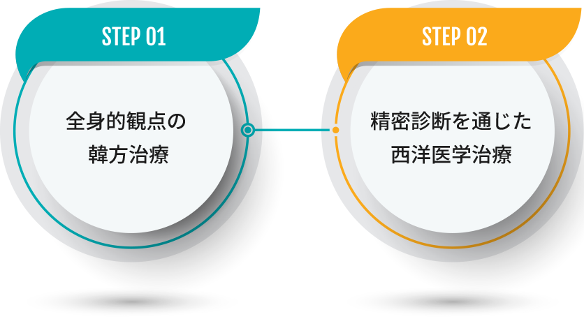

医術から仁術へ患者を診療する
韓方・西洋医学の統合医療スタッフ
病気を癒す医術だけでなく傷付いた心まで癒せる仁術で診療します。
韓方医学と西洋医学が一つになって精密な診断及び治療計画を
立てて患者の体と心までケアします。

病気を癒す医術だけでなく傷付いた心まで癒せる仁術で診療します。
韓方医学と西洋医学が一つになって精密な診断及び治療計画を
立てて患者の体と心までケアします。
薬材購買から患者様への配送まで全過程を統合的に厳しく管理しています 。
廣東病院は韓方医と西洋医学医が常駐していて
真に韓方・西洋医学の統合診療ができます。
廣東病院ではこのように相互補完的な治療のために
韓方・西洋医学の統合診療システムを運営しているので
患者の選択で韓方と西洋医学又は統合治療が受けられます。